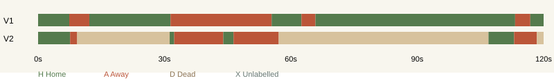
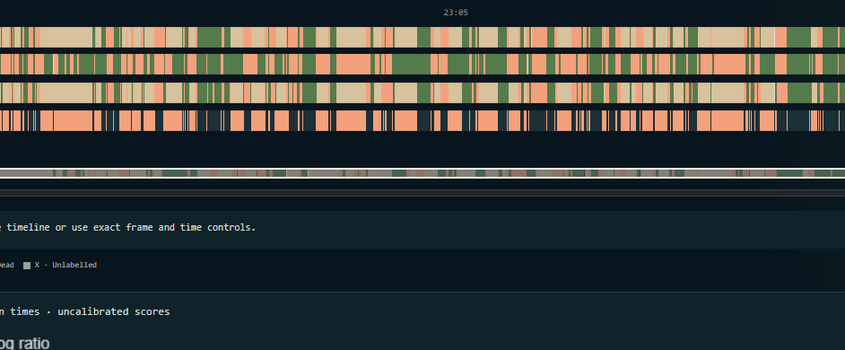

MALWAROUS / MORE THAN A HACK 2027 / PHASE 1
Technical submission · 16 November 2026
Read possession
through the gaps.
Observable context and persistent decoding for incomplete football tracking.
Muhammad Hasnaat Hussain · Kabir Niazi
Younus Rehmatullah
Team Malwarous · three registered technical members
context_p10_r0OFFLINE25 fps
Original method schematic. No target-match imagery or calibrated-confidence claim.
0.48095Mean external development spellF1
0.86868Mean external development macroF1
Six reused matches · 18 paired rows · whole-match excluded fits.
Selection-conditioned development evidence, not a competition score or blind test.
MALWAROUS / METHOD / context_p10_r0
Two estimates.
One possession sequence.
The system writes one algorithmic H/A/D/X label for each of 199,319 tactical-video frames. Missing ball observations do not automatically mean dead ball. Anonymous tracking slots are not treated as player identities.
Observable features
Twenty-one base measurements and 44 derived/context measurements give 65 features: nearest-team geometry, nearby-player counts, ball motion and validity, observation age/support, pitch-edge evidence, centered valid-support windows of 0.4, 2 and 4 seconds, and bounded previous/next nearby-control observations within 5 seconds. Unsupported distances do not enter contextual means as physical measurements.
Alive / dead headNatural-prior histogram gradient boosting. No class reweighting.
Home / away headTeam-swap augmentation and symmetric inference enforce side equivariance.
Both heads: 100 iterations, at most 15 leaves, leaf support 100, L2 regularization 5. Feature inputs contain no labels, match ID or absolute match time.
State evidence and decoding
For live estimate a and home-ownership estimate h, combine P(H)=a·h, P(A)=a·(1−h), P(D)=1−a. These are uncalibrated model estimates. Half-wise Viterbi maximizes accumulated log evidence minus 10 per state change; radius is zero. Future context makes this an offline method.
Illustrative state machine; self-continuation costs zero. This is not a hard minimum spell length.
Possession rules
H/A represent inferred persistent team control, including a loose-ball interval when evidence still favors the same side. Challenges and turnovers are resolved by the decoded evidence path, not hand-labelled contacts. D is the learned inactive state. Halves reset independently and official outside-half blocks are X. No manual correction is applied.
Data and code credit
Manuel Bassek, Robert Rein, Hendrik Weber & Daniel Memmert, An integrated dataset of spatiotemporal and event data in elite soccer, Figshare v1, DOI 10.6084/m9.figshare.28196177.v1, CC BY 4.0. Modifications: features, masks, derived weights/predictions and replay transformations. Authors do not endorse this model. Code retains the organizer MIT notice; see LICENSE. Competition assets have separate restricted terms.
MALWAROUS / EXTERNAL EVIDENCE
Measured across matches.
Qualified by its limits.
Training supervision is provider BallStatus/BallPossession from six licensed DFL/Sportec matches: J03WN1, J03WOY, J03WPY, J03WOH, J03WQQ and J03WR9. Three fixed folds fit on four matches and predict two excluded matches. Fit uses original/drop40 views, stride five after full-rate context. The final artifact fits all six.
| Observation scenario | V1 spellF1 | V2 spellF1 |
|---|
| Original | 0.3083 | 0.5492 |
| Drop40 · mean block 8 frames | 0.2728 | 0.5309 |
| Drop70 · mean block 25 frames | 0.1854 | 0.3628 |
| Mean of 18 paired rows | 0.25548 | 0.48095 |
| Mean macroF1 | 0.39809 | 0.86868 |
All 18 paired spellF1 differences are positive. Candidate selection used these same development results. This is not independent confirmation, a competition score, or a comparison against every organizer baseline.


J03WN1 half1: first120s timeline and whole-half evidence. Licensed external: Bassek, Rein, Weber & Memmert, CC BY 4.0. Display observations are thinned; scores are uncalibrated. No target-derived imagery.
Checks that did not change the release
J03WMX, excluded from V2 fitting/selection but previously consumed in the V1 audit, gave the final artifact 0.5240 spellF1 / 0.9185 macroF1. This is a descriptive check, not fresh testing.
V3/V4/V5 failed registered replacement gates. V6 compared already consumed penalties p10/p25/p50 on the same 18 external rows: spellF1 0.48095 / 0.47213 / 0.44372; transition F1 at ±25 frames 0.51545 / 0.50761 / 0.49284. Both alternatives failed the conjunctive gate. The frozen V2 remains unchanged.
MALWAROUS / ASSETS, LIMITS & REPRODUCTION
A reproducible submission.
An explicit boundary.
| Provided asset | Selected pipeline decision |
|---|
| Tactical ATD + metadata | Used: geometry, anonymous sides, pitch |
| Official frame/half metadata | Used: output contract and half resets |
| Smart Tagging | Not integrated: approximate restart windows; external fusion qualification incomplete |
| Homography | Not integrated: pitch coordinates already supplied |
| Broadcast recording / ATD | Not integrated: separate timeline; alignment unvalidated |
| Tactical video | Not a selected-model inference input |
Not integrated does not assert a completed benchmark or failed implementation. Public Smart Tagging source was reviewed; tags are not possession truth or exact stoppage spans.
Limits
Short possessions remain difficult: clean-external IoU-0.5 recall was 11.3% for 0.5–2-second spells versus 78.9% for spells longer than 5 seconds. Provider-label semantics, synthetic dropout realism and transfer to automatic tracking limit generalization. No fresh independent dense-label test qualified. No target accuracy, full-match target-score range or rank is established.
Reproduce the exact CSV
Use 64-bit CPython 3.11.9 and the pinned requirements. From the repository root, with authorized assets separately installed:
python3.11 -m venv .venv
.venv/bin/python -m pip install -r requirements.lock
export MTAH_DATA_DIR='/path/to/authorized/bundle'
.venv/bin/python -m malwarous.v2.safe_runner v2_target_infer
.venv/bin/python -m malwarous.v2.safe_runner v2_target_reproduce
Check each exit status. No training/finalizer step is needed. Output: artifacts_private/v2/Malwarous-v2.csv. Windows and Linux/WSL CPython 3.11.9 reproduced the published CSV byte for byte; the second Linux run also matched. Validate the final upload with evaluation/validate_submission.py. Integrity: python -B scripts/verify_repository.py.
Source and access
github.com/Hasnaathussain/malwarous-possession
malwarous-atlas.vercel.app · Source, lock files, model weights, all external rows, failed gates and document source are included. Publishing the packet is not organizer-form submission.